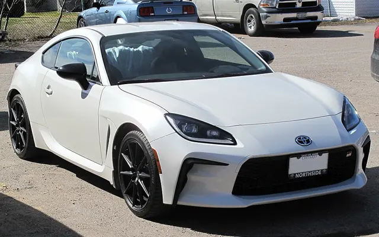

Par Motor › Precios por modelo › Toyota GT86 y GR86
Precio de segunda mano · noviembre de 2026¿Cuánto vale un Toyota GT86 y GR86 de segunda mano?

Precio justo estimado de un Toyota GT86 y GR86 usado en España, año por año, con los kilómetros normales para su edad y en buen estado: de 22.600 € a 34.800 €. Para tasar el tuyo con sus kilómetros reales y su estado, usa el tasador gratis.
Precios del Toyota GT86 y GR86 por año
GT86 (2012–2020)
Precio de nuevo: 2.0 Bóxer 200 CV, 31.000 €
| Año | Km normales | 2.0 Bóxer 200 CV · Gasolina |
|---|---|---|
| 2020 | 95.000 km | 23.100 € |
| 2019 | 100.000 km | 22.600 € |
| 2018 | 100.000 km | 23.000 € |
| 2017 | 100.000 km | 23.300 € |
| 2016 | 100.000 km | 23.600 € |
| 2015 | 100.000 km | 23.800 € |
| 2014 | 100.000 km | 24.000 € |
| 2013 | 100.000 km | 23.600 € |
| 2012 | 100.000 km | 22.800 € |
GR86 (2022–2024)
Precio de nuevo: 2.4 Bóxer 234 CV, 37.000 €
| Año | Km normales | 2.4 Bóxer 234 CV · Gasolina |
|---|---|---|
| 2024 | 35.000 km | 34.800 € |
| 2023 | 50.000 km | 33.700 € |
| 2022 | 65.000 km | 32.600 € |
Kilómetros normales: 15.000 al año en gasolina, híbridos y eléctricos, y 20.000 en diésel, con un máximo de 100.000 km (por encima no tasamos: el precio depende demasiado del historial de cada coche). Cifras redondeadas a 100 €.
Preguntas frecuentes
¿Cuánto vale un Toyota GT86 y GR86 de segunda mano?
Según el año, la versión y los kilómetros, un Toyota GT86 y GR86 usado vale hoy de 22.600 € a 34.800 € en España. El más barato de nuestra tabla es un 2.0 Bóxer de 2019 (22.600 €) y el más caro un 2.4 Bóxer de 2024 (34.800 €). Son precios justos estimados entre particulares y profesionales, con los kilómetros normales para su edad y en buen estado.
¿Qué motorizaciones tiene el Toyota GT86 y GR86?
En nuestra base de datos hay versiones gasolina, en 2 generaciónes: GT86 y GR86.
¿Cómo sé si me piden demasiado por un Toyota GT86 y GR86?
Abre el tasador de Par Motor, elige el Toyota GT86 y GR86, el año y los kilómetros reales, y escribe lo que te piden. Te diremos si está por debajo del precio justo (chollo) o por encima (caro). Es gratis y no pide registro ni matrícula.
Otros Toyota
- Avensis
- Aygo
- bZ4X
- C-HR
- Camry
- Corolla Cross
- Corolla y Auris
- GR Corolla
- GR Supra
- GR Yaris
- Hilux
- Land Cruiser
- Land Cruiser 200
- Prius
- RAV4
- Urban Cruiser
- Verso
- Yaris
- Yaris Cross
Compara su coste real
El precio de compra es solo una parte. Mira cuánto te costaría al mes con combustible, seguro, neumáticos, mantenimiento y lo que pierde de valor.
Abrir el comparador →